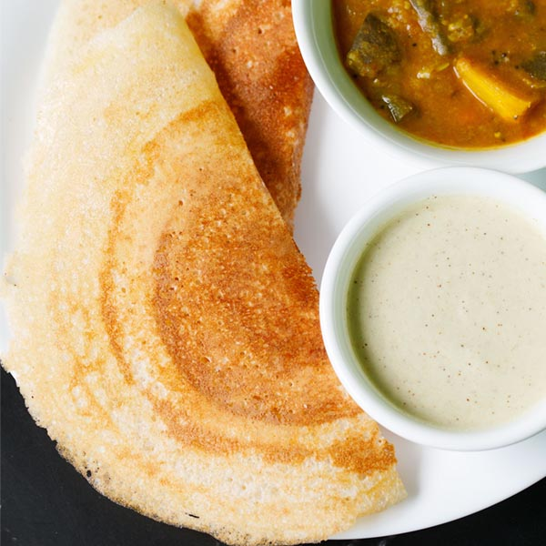

Dosa
Dosa
Discription
A dosa is a thin pancake originating from South India, made from a fermented batter predominantly consisting of lentils and rice. It is somewhat similar to a crepe in appearance, although savoury flavours are generally emphasized (sweet variants also exist). Its main ingredients are rice and black gram, ground together in a fine, smooth batter with a dash of salt, then fermented. Dosas are a common dish in South Indian cuisine, but now have become popular all over the Indian subcontinent. Dosas are served hot along with chutney by tradition and sambar in recent times. Other accompaniments include chutney powder (a fine groundnut and lentil powder).
Igredients
Steps:
- In a bowl take ½ cup idli rice or parboiled rice along with ½ cup regular rice. Instead of adding regular rice, you can also make the dosa with a total of 1 cup idli rice as I have shown in the video. Kindly note that the video has the recipe ingredients doubled in proportion.
- To the same bowl, add ¼ cup urad dal and ⅛ teaspoon fenugreek seeds (methi).
- Rinse the rice, lentils and methi seeds together a couple of times and keep them aside.
- In a separate bowl, take 2 tablespoons of thick poha (flattened rice or parched rice).
- Rinse poha once or twice in water and then add to the bowl containing the rinsed rice+lentils+methi seeds.
- Add 1.5 cups of water and mix. Cover with a lid and soak everything for 4 to 5 hours.
- Drain all the water and add the soaked ingredients to a mixer grinder or a blender.